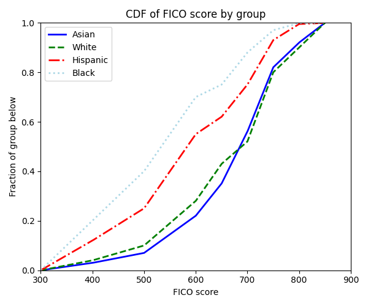
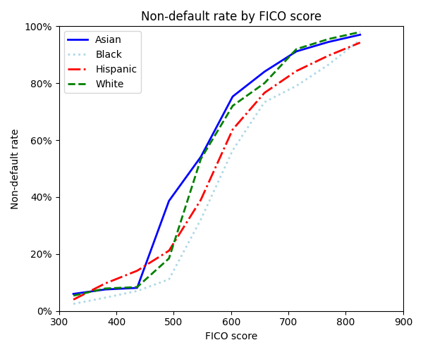
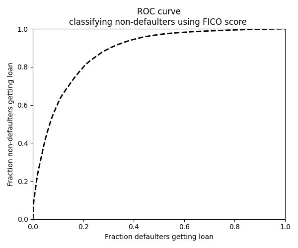
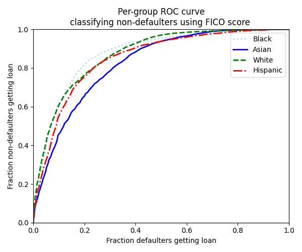
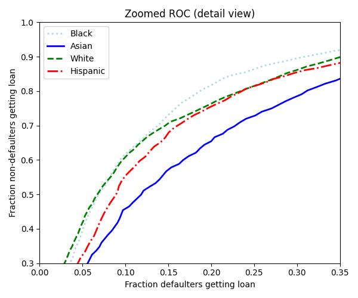

Exercise Class 7
This week we start from this repository.
This week’s exercises are about binary classification and fairness. We will use simulated data corresponding to the empirical example in the paper “Equality of Opportunity in Supervised Learning” of Hardt et. al 2016. The simulated data is stored in the csv fico.csv which can be downloaded here or at Absalon here.
Printing out an overview of the data shows:
import polars as pl
df = pl.read_csv("data/fico.csv")
print(df)shape: (55_000, 3)
┌────────────┬─────┬──────────┐
│ FICO ┆ ND ┆ group │
│ --- ┆ --- ┆ --- │
│ f64 ┆ i64 ┆ str │
╞════════════╪═════╪══════════╡
│ 300.166667 ┆ 0 ┆ Asian │
│ 300.5 ┆ 0 ┆ Asian │
│ 300.833333 ┆ 0 ┆ Asian │
│ 301.166667 ┆ 0 ┆ Asian │
│ 301.5 ┆ 0 ┆ Asian │
│ … ┆ … ┆ … │
│ 845.5 ┆ 0 ┆ Hispanic │
│ 846.5 ┆ 1 ┆ Hispanic │
│ 847.5 ┆ 1 ┆ Hispanic │
│ 848.5 ┆ 1 ┆ Hispanic │
│ 849.5 ┆ 1 ┆ Hispanic │
└────────────┴─────┴──────────┘The data consists of \(55,000\) rows and \(3\) columns:
FICO: A simulated FICO credit score. These scores range from 300 to 850 and try to predict credit risk (a higher score is better i.e. less credit risk).ND(Non-Default): Indicates whether the individual avoided default — that is, they did not miss payments for 90 days or more on any account during the following 18–24 months.group: Protected attribute - a group variable indicating the race of the individual; restricted to four values:Asian,White,BlackandHispanic.
As written in Hardt et al. 2016:
FICO scores are complicated proprietary classifiers based on features, like number of bank accounts kept, that could interact with culture - and hence race — in unfair ways.
As our data we consider the tuple \((Y, R, A) \sim P\) where:
- \(Y\) is the outcome variable
ND - \(R\) is the credit-score variable
FICO - \(A\) is the protected race variable
group
We will study the behavior of a lender under various constraints with the given data at hand. A lender can set a threshold \(r\) and decide whether to give out a loan to a given individual based on the credit-score \(R\) and the threshold \(r\). The lender will give out a loan to all individuals that have a credit-score above the threshold i.e. \(R > r\). Setting a threshold corresponds to constructing a classifier:
\[\hat{Y} := \mathbf{1}\{R > r\}. \tag{1}\]
Finally, the meaning of true positive, true negative, false positive and false negative in our context for the lender is as follows:
- A true positive is giving out a loan to an individual that did not default previously i.e. \(\hat{Y}_{i} = 1\) for \(Y_{i} = 1\)
- A true negative is not giving out a loan to an individual that did default previously i.e. \(\hat{Y}_{i} = 0\) for \(Y_{i} = 0\)
- A false positive is giving out a loan to an individual that did default previously i.e. \(\hat{Y}_{i} = 1\) for \(Y_{i} = 0\)
- A false negative is not giving out a loan to an individual that did not default previously i.e. \(\hat{Y}_{i} = 0\) for \(Y_{i} = 1\)
Exercise 1 - Overview of data
Download the data and place it in some folder in your project directory e.g.
data/. The data can then be loaded using e.g.polarsand the snippet above.Tip: the data can be downloaded directly to the
data/folder usingwgetas follows:wget -P data/ https://gist.githubusercontent.com/jsr-p/5ca222a5e48b20aead6a65fcf142d315/raw/c3ae62168c9e5f7887bda3d4d840b69d0cf079fc/fico.csvwhich you copy, paste and run in your shell.
Compute the empirical default and non-default rates for the whole sample and conditional on each subgroup in
group.You should get results similar to:
shape: (5, 3) ┌──────────┬──────────────┬──────────────────┐ │ group ┆ Default rate ┆ Non-default rate │ │ --- ┆ --- ┆ --- │ │ str ┆ f64 ┆ f64 │ ╞══════════╪══════════════╪══════════════════╡ │ All ┆ 0.36 ┆ 0.64 │ │ Asian ┆ 0.21 ┆ 0.79 │ │ Black ┆ 0.64 ┆ 0.36 │ │ Hispanic ┆ 0.47 ┆ 0.53 │ │ White ┆ 0.25 ┆ 0.75 │ └──────────┴──────────────┴──────────────────┘As written in Hardt et al. 2016, a credit score cutoff of \(620\) is commonly used for prime-rate loans. Compute the non-default rate for the whole sample and for each group for those with \(R_{i} > r\) and those with \(R_{i} \leq r\) for \(r = 620\).
You should get results similar to:
┌─────────┬──────────┬──────┐ │ Above r ┆ group ┆ ND │ │ --- ┆ --- ┆ --- │ │ i8 ┆ str ┆ f64 │ ╞═════════╪══════════╪══════╡ │ 0 ┆ All ┆ 0.34 │ │ 0 ┆ Asian ┆ 0.5 │ │ 0 ┆ Black ┆ 0.2 │ │ 0 ┆ Hispanic ┆ 0.3 │ │ 0 ┆ White ┆ 0.43 │ │ 1 ┆ All ┆ 0.89 │ │ 1 ┆ Asian ┆ 0.9 │ │ 1 ┆ Black ┆ 0.78 │ │ 1 ┆ Hispanic ┆ 0.84 │ │ 1 ┆ White ┆ 0.91 │ └─────────┴──────────┴──────┘Replicate Figure 7 of Hardt et al. 2016 with the simulated dataset.
You should get results similar to:


Replicate the second panel of Figure 8 in Hardt et al. 2016 while ignoring the shading. What is the interpretation of the figure and how does it relate to fairness?
Hint: use the
qcutmethod from either polars or pandas to compute the within-group percentiles categories and the non-default rates inside those.
Exercise 2 - Binary classification metrics and the ROC curve
Set \(r = 620\) and classify each individual using the rule in Equation 1. With this you should now have a vector of predicted outcomes, e.g. denoted
Y_hat, and the vector of true outcomes, e.g. denoted asy. UseY_hatandyto compute the True Positive Rate (TPR), False Positive Rate (FPR), True Negative Rate (TNR), and False Negative Rate (FNR).shape: (1, 4) ┌──────┬──────┬──────┬──────┐ │ TPR ┆ FNR ┆ FPR ┆ TNR │ │ --- ┆ --- ┆ --- ┆ --- │ │ f64 ┆ f64 ┆ f64 ┆ f64 │ ╞══════╪══════╪══════╪══════╡ │ 0.77 ┆ 0.23 ┆ 0.18 ┆ 0.82 │ └──────┴──────┴──────┴──────┘Construct a grid of percentile values \(Q := \{0, 0.01, 0.02, \ldots, 0.98, 0.99, 1\}\) e.g. using
np.arange. Use these withnp.quantileto compute the quantile corresponding to each \(q \in Q\); we will use these as thresholds for the classifier.Note: you can also just construct a grid from \(300\) to \(850\) as the thresholds.
Loop over each of threshold values and classify each individual using the rule in Equation 1. Save the resulting metrics for each value and construct a dataframe of all the computed values. You should now have a dataframe of FPR and TPR for each of the thresholds \(r\).
Recall that the ROC curve shows plots the TPR against the FPR of a given classifier for different threshold values \(r\). Use the computed values from the previous exercise to plot the ROC curve corresponding to the FICO score \(R\) for varying tresholds \(r\).
You should get results similar to:

Repeat 2. and 3. but now compute the ROC curve for each group based on the protected attribute \(A\).
You should get results similar to:

Make a zoomed-in version of the figure in 4. shown above.
You should get results similar to:

Optional: Compute as many of the thresholds corresponding to the five constraints on the lender as written below and explained in Hardt et al. 2016:
- Max profit
- Race blind
- Demographic parity
- Equal opportunity
- Equalized odds
Try also to plot the trade-offs in the zoomed in ROC-curve of exercise 5. above.
Note: For the last three you will need to use the fairlearn package.